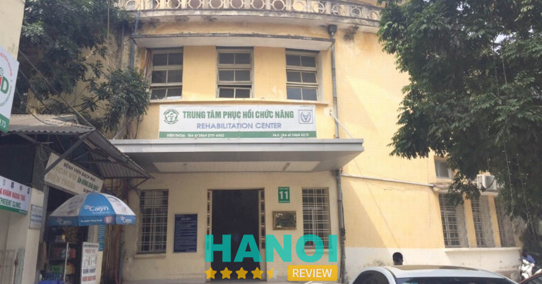
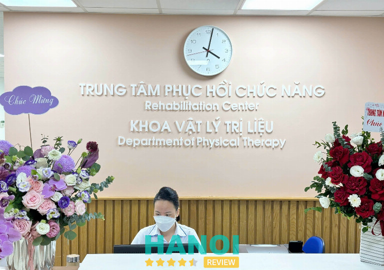
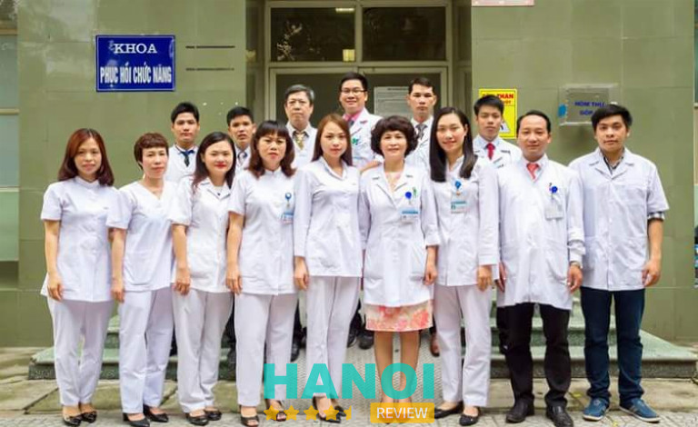
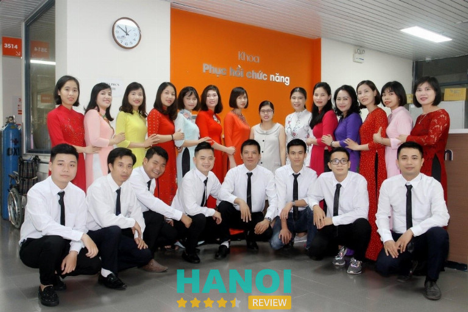
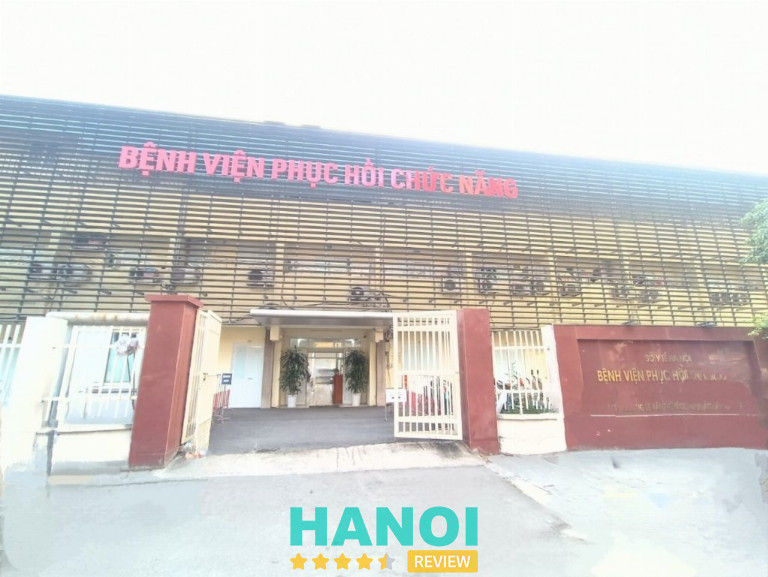
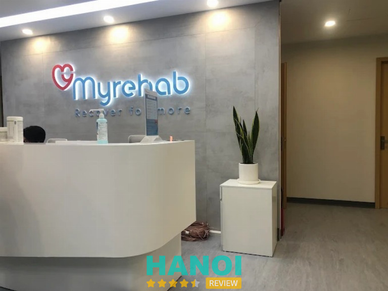
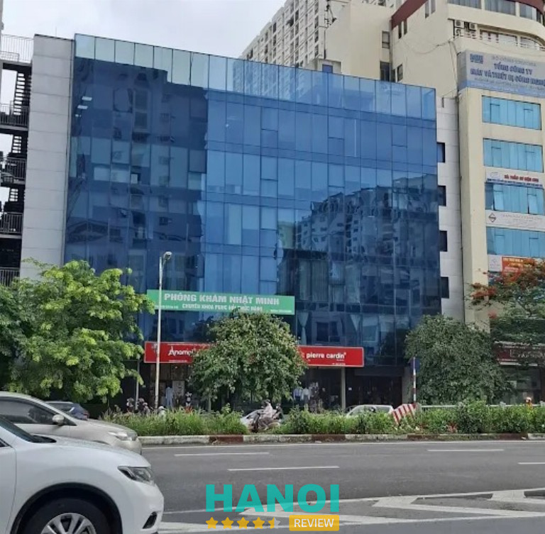
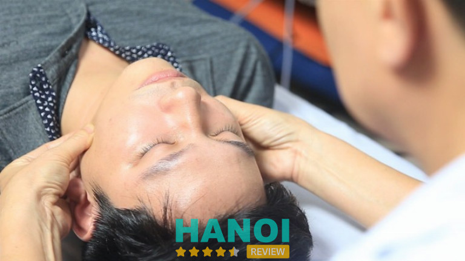
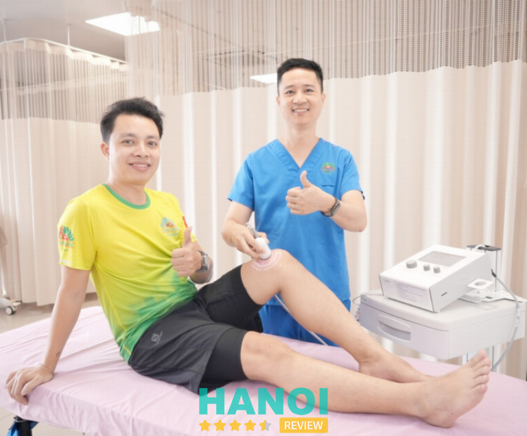

10 Trung tâm vật lý trị liệu ở Hà Nội uy tín giúp phục hồi nhanh chóng
Hiện nay, nhu cầu tìm kiếm các trung tâm vật lý trị liệu ở Hà Nội đang tăng cao nhằm điều trị dứt điểm các bệnh lý cơ xương khớp và thần kinh. Việc lựa chọn đúng cơ sở chuyên khoa giúp bệnh nhân rút ngắn thời gian hồi phục, giảm thiểu đau đớn mà không cần lạm dụng thuốc Tây. Những địa chỉ chất lượng thường sở hữu đội ngũ bác sĩ tay nghề cao cùng hệ thống máy móc đạt chuẩn quốc tế.
Top 10 Trung tâm vật lý trị liệu tại Hà Nội đem lại hiệu quả điều trị vượt trội
Việc điều trị bảo tồn thông qua các phương pháp vận động và tác động vật lý đang trở thành xu hướng y khoa hiện đại. Những đơn vị được đánh giá cao thường kết hợp linh hoạt giữa y học cổ truyền và công nghệ tiên tiến để tối ưu hóa lộ trình phục hồi.
Bệnh viện Bạch Mai – P. Kim Liên
Khi tìm kiếm trung tâm vật lý trị liệu ở Hà Nội, Trung tâm Phục hồi chức năng thuộc Bệnh viện Bạch Mai thường được nhắc đến như một địa chỉ nổi bật về uy tín và chất lượng chuyên môn. Đây là một trong những trung tâm quy mô lớn, đảm nhận vai trò quan trọng trong quá trình phục hồi chức năng cho nhiều nhóm bệnh nhân khác nhau.

Không chỉ đơn thuần là cơ sở y tế, nơi đây còn được xem như điểm tựa trong hành trình cải thiện khả năng vận động. Hệ thống trang thiết bị hiện đại kết hợp cùng đội ngũ chuyên môn giúp quá trình trị liệu được triển khai bài bản, phù hợp với từng tình trạng cụ thể. Vì vậy, khi đề cập đến trung tâm vật lý trị liệu ở Hà Nội, địa chỉ này thường nằm trong danh sách ưu tiên của nhiều người đang tìm kiếm giải pháp phục hồi hiệu quả.
Trung tâm sở hữu thế mạnh vượt trội trong việc điều trị và chuyên phục hồi sau tai biến mạch máu não và các chấn thương nặng như chấn thương sọ não, cột sống hoặc sau các ca phẫu thuật phức tạp. Điểm khác biệt của Bạch Mai chính là sự kết hợp nhuần nhuyễn giữa y học hiện đại và các kỹ thuật vận động trị liệu, ngôn ngữ trị liệu và hoạt động trị liệu.
Lợi thế khi phục hồi chức năng tại Bệnh viện Bạch Mai:
- Đội ngũ chuyên gia: Quy tụ những bác sĩ, kỹ thuật viên đầu ngành, giàu kinh nghiệm và tận tâm với người bệnh.
- Trang thiết bị tiên tiến: Hệ thống máy móc tập luyện robot, máy kích thích điện và các dụng cụ hỗ trợ hiện đại giúp đẩy nhanh quá trình hồi phục.
- Phác đồ cá nhân hóa: Mỗi bệnh nhân được thiết kế một lộ trình điều trị riêng biệt, bám sát tình trạng sức khỏe thực tế.
Với sứ mệnh mang lại cuộc sống độc lập cho người bệnh, trung tâm đã giúp vô số trường hợp vượt qua rào cản khuyết tật, tái hòa nhập cộng đồng một cách ngoạn mục. Nếu bạn đang tìm kiếm một địa chỉ chuyên sâu để điều trị các di chứng nặng, đây chính là lựa chọn tin cậy nhất tại Thủ đô.
Thông tin liên hệ:
- Địa chỉ: 78 Giải Phóng, P. Kim Liên, Hà Nội
- Điện thoại: 1900 888 866
- Email: congvandenctxh@gmail.com
- Website: bachmai.gov.vn
- Facebook: fb.com/benhvienbachmai1911
Bệnh viện Trung ương Quân đội 108 – P. Hai Bà Trưng
Một trung tâm vật lý trị liệu ở Hà Nội uy tín đòi hỏi sự đánh giá kỹ lưỡng về chuyên môn cũng như hệ thống trang thiết bị. Khoa Vật lý trị liệu – Phục hồi chức năng (A26B) thuộc Bệnh viện Trung ương Quân đội 108 hiện nay là đơn vị chuyên môn sâu về hồi phục các chức năng vận động và nhận thức cho bệnh nhân sau tai nạn, phẫu thuật hoặc gặp các bệnh lý mãn tính.

Các tình trạng suy giảm chức năng được điều trị cụ thể bao gồm:
- Di chứng thần kinh: Tình trạng liệt do đột quỵ não, chấn thương tủy sống hoặc các bệnh lý thần kinh khác.
- Cơ xương khớp: Các vấn đề về thoái hóa khớp, thoát vị đĩa đệm cột sống cổ và thắt lưng, di chứng sau chấn thương xương khớp.
- Hậu phẫu: Phục hồi chức năng sau mổ, xử lý các vết thương, vết loét và nhiễm trùng phần mềm.
- Kỹ thuật mới: Trị liệu rối loạn ngôn ngữ, phục hồi bàn tay sau trồng lại chi thể và trị liệu bằng âm thanh hoặc âm nhạc.
Hình thức can thiệp tại trung tâm vật lý trị liệu ở Hà Nội này hoàn toàn không dùng thuốc, tập trung vào việc ứng dụng các yếu tố vật lý như sóng âm, ánh sáng, nhiệt và vận động cơ học nhằm hỗ trợ giảm đau hiệu quả. Việc triển khai công nghệ tập luyện tích cực thông qua hệ thống HUR góp phần cải thiện rõ rệt quá trình phục hồi chức năng.
Bên cạnh đó, trung tâm vật lý trị liệu ở Hà Nội còn kết hợp giữa nền tảng khoa học y khoa và các liệu pháp tâm lý, can thiệp hành vi, giúp người bệnh thích nghi tốt hơn trong quá trình tái hòa nhập cộng đồng. Đây là lựa chọn phù hợp khi tìm kiếm trung tâm vật lý trị liệu ở Hà Nội đáp ứng tiêu chuẩn về công nghệ hiện đại và kỹ thuật chuyên sâu, phục vụ đa dạng nhu cầu điều trị.
Thông tin liên hệ:
- Địa chỉ: Số 1 Trần Hưng Đạo, P. Hai Bà Trưng, Hà Nội
- Điện thoại: 0971 830 166
- Email: bvtuqd108@benhvien108.vn
- Website: benhvien108.vn
- Facebook: fb.com/Benhvientwqd108
Bệnh viện Hữu nghị Việt Đức – P. Hoàn Kiếm
Bệnh viện Hữu nghị Việt Đức sở hữu Trung tâm Phục hồi chức năng (PHCN) chuyên khoa sâu, góp phần hoàn thiện chu trình điều trị cho người bệnh sau can thiệp ngoại khoa. Định hướng tập trung vào phục hồi vận động, hỗ trợ quay lại sinh hoạt thường ngày trong thời gian sớm, đặc biệt phù hợp với các ca phẫu thuật phức tạp.

Hoạt động PHCN tại đây bao phủ nhiều nhóm bệnh lý và giai đoạn điều trị, từ sau mổ đến các trường hợp điều trị nội khoa cần phục hồi chức năng. Đội ngũ bác sĩ và kỹ thuật viên được đào tạo bài bản trong và ngoài nước, kết hợp hệ thống máy tập và thiết bị vật lý trị liệu hiện đại như sóng cao tần, laser, điện xung, giúp tối ưu hóa tiến trình hồi phục.
Các hạng mục triển khai gồm:
- Phục hồi sau phẫu thuật chấn thương chỉnh hình, thần kinh, cột sống, tim mạch
- Điều trị PHCN cho thoát vị đĩa đệm, thoái hóa khớp, di chứng sau tai nạn
- Khám và tư vấn PHCN chuyên sâu với Giáo sư, Tiến sĩ
- Xây dựng liệu trình tập luyện cá nhân hóa theo từng loại phẫu thuật
- Đào tạo thực hành và chuyển giao kỹ thuật PHCN
Với định hướng chuyên sâu và hệ thống thiết bị đồng bộ, trung tâm vật lý trị liệu ở Hà Nội này phù hợp cho nhu cầu theo dõi và tập luyện bài bản sau điều trị. Liên hệ trực tiếp để được tư vấn phác đồ phù hợp và sắp xếp lịch thăm khám.
Thông tin liên hệ:
- Địa chỉ: Số 40 Tràng Thi, P. Hoàn Kiếm, Hà Nội
- Điện thoại: 024 3825 3531
- Email: congtacxahoibvvd@gmail.com
- Website: benhvienvietduc.org
- Facebook: fb.com/bvvietduc
Bệnh viện Châm cứu Trung ương – P. Đống Đa
Khi tìm kiếm trung tâm vật lý trị liệu ở Hà Nội, Bệnh viện Châm cứu Trung ương là một trong những địa chỉ được nhắc đến nhờ mô hình kết hợp giữa y học cổ truyền và phục hồi chức năng hiện đại. Tại đây, các đơn vị chuyên môn được tổ chức rõ ràng, hỗ trợ điều trị và cải thiện khả năng vận động cho nhiều nhóm bệnh nhân khác nhau.
Khoa Đột quỵ – Phục hồi chức năng đóng vai trò quan trọng trong việc ứng dụng đồng thời châm cứu, xoa bóp bấm huyệt cùng các phương pháp vật lý trị liệu hiện đại. Hướng tiếp cận này tập trung vào việc phục hồi chức năng vận động, cải thiện tuần hoàn và hỗ trợ tái tạo khả năng sinh hoạt. Bên cạnh đó, Trung tâm Phục hồi chức năng và Khí công dưỡng sinh là đơn vị chuyên sâu về tập luyện, giúp tăng cường thể lực và duy trì hiệu quả điều trị lâu dài.
Các phương pháp vật lý trị liệu tại đây thường được áp dụng cho nhiều nhóm bệnh lý khác nhau, bao gồm:
- Phục hồi sau đột quỵ và tai biến mạch máu não
- Điều trị liệt vận động và hỗ trợ chậm phát triển ngôn ngữ ở trẻ em
- Các bệnh lý liên quan đến thần kinh, xương khớp và cột sống
Sự kết hợp giữa kỹ thuật truyền thống và thiết bị hiện đại tạo nên hướng điều trị đa dạng, phù hợp với từng tình trạng cụ thể. Đây là một lựa chọn đáng cân nhắc khi tìm kiếm trung tâm vật lý trị liệu ở Hà Nội với định hướng phục hồi chức năng toàn diện.
Thông tin liên hệ:
- Địa chỉ: 49 phố Thái Thịnh, P. Đống Đa, Hà Nội
- Địa chỉ: 024 3562 4156
- Email: bvchamcuutrunguong@gmail.com
- Website: benhvienchamcuu.com
- Facebook: fb.com/chamcuuvietnam.vn
Bệnh viện Lão khoa Trung ương – P. Kim Liên
Khoa Phục hồi chức năng tại Bệnh viện Lão khoa Trung ương tập trung vào mục tiêu cải thiện khả năng vận động và nâng cao chất lượng cuộc sống cho người cao tuổi. Đây là đơn vị chuyên môn đóng vai trò then chốt trong mô hình chăm sóc đa chiều, hỗ trợ bệnh nhân hồi phục sau các tổn thương hoặc bệnh lý mạn tính thường gặp ở tuổi già.

Chức năng và nhiệm vụ chính:
- Điều trị và phục hồi: Thực hiện các kỹ thuật vật lý trị liệu cho bệnh nhân tai biến mạch máu não, thoái hóa khớp, sau phẫu thuật xương khớp và các hội chứng lão khoa.
- Cải thiện vận động: Giúp người bệnh lấy lại khả năng tự phục vụ trong sinh hoạt hằng ngày, giảm sự phụ thuộc vào người thân.
- Phối hợp liên chuyên khoa: Kết hợp chặt chẽ với các khoa Thần kinh, Tim mạch, Cơ xương khớp để đưa ra phác đồ điều trị toàn diện.
Hoạt động tại trung tâm vật lý trị liệu ở Hà Nội này hướng đến việc giải quyết các vấn đề phức tạp ở người cao tuổi. Các trường hợp tiếp nhận bao gồm người bị suy giảm chức năng sau chấn thương hoặc bệnh tật, bệnh nhân mắc bệnh mạn tính gây đau đớn và hạn chế vận động. Ngoài ra, đơn vị còn chăm sóc và tổ chức tập luyện chuyên biệt cho người già gặp các hội chứng dễ bị tổn thương.
Việc ứng dụng các phương pháp vật lý trị liệu chuyên sâu giúp bệnh nhân hướng tới mục tiêu sống tốt hơn và duy trì sự độc lập trong cuộc sống. Người có nhu cầu tư vấn hoặc điều trị phục hồi chức năng có thể liên hệ trực tiếp với bệnh viện để được hỗ trợ theo phác đồ chuyên môn.
Thông tin liên hệ:
- Địa chỉ: Số 1A Phương Mai, P. Kim Liên, Hà Nội
- Điện thoại: 024 3576 4558
- Email: benhvienlaokhoa.bvlktw@gmail.com
- Website: benhvienlaokhoa.vn
- Facebook: fb.com/www.benhvienlaokhoa.vn
Bệnh viện Phục hồi chức năng Hà Nội – Thanh Xuân
Bệnh viện Phục hồi chức năng Hà Nội là bệnh viện chuyên khoa hạng II trực thuộc Sở Y tế Hà Nội. Tiền thân của đơn vị là Làng Hòa Bình Thanh Xuân, được tổ chức lại và chính thức thành lập vào năm 2011. Đây là địa chỉ tập trung vào các dịch vụ khám chữa bệnh chuyên sâu và phục hồi chức năng cho người dân trên địa bàn.

Các hoạt động chuyên môn tại đây bao gồm:
- Khám và điều trị: Thực hiện thăm khám, điều trị bệnh đa khoa kết hợp với y học cổ truyền.
- Phục hồi chức năng: Điều trị nội trú và ngoại trú cho các trường hợp suy giảm chức năng cơ thể, điều trị bệnh nghề nghiệp và tổ chức an dưỡng.
- Ứng dụng kỹ thuật mới: Thường xuyên áp dụng các kỹ thuật mới trong công tác phục hồi chức năng nhằm nâng cao hiệu quả chăm sóc bệnh nhân.
Về mặt tiện ích, bệnh viện thiết kế lối vào và bãi đỗ xe hỗ trợ người đi xe lăn, tạo thuận lợi cho việc di chuyển của bệnh nhân đặc thù. Để tiết kiệm thời gian chờ đợi, người bệnh có thể thực hiện đặt lịch khám trực tuyến trước khi đến.
Với nền tảng từ một cơ sở có truyền thống hỗ trợ người khuyết tật, bệnh viện hiện nay đáp ứng nhu cầu tìm kiếm các trung tâm vật lý trị liệu ở Hà Nội uy tín thông qua lộ trình điều trị bài bản. Việc liên hệ sớm giúp người bệnh tiếp cận nhanh chóng với các phương pháp phục hồi chức năng chuyên sâu phù quan với tình trạng sức khỏe.
Thông tin liên hệ:
- Địa chỉ: Số 35 Lê Văn Thiêm, Thanh Xuân, Hà Nội
- Điện thoại: 08 2881 0068
- Email: bvddphcn_soyt@hanoi.gov.vn
- Website: bv-phuchoichucnanghanoi.vn
- Facebook: fb.com/bvphcnhn
Myrehab Matsuoka – P. Kim Liên
Trung tâm Trị liệu và Phục hồi chức năng MYREHAB – MATSUOKA là đơn vị tại Việt Nam áp dụng mô hình phục hồi chức năng toàn diện dựa trên sự hợp tác giữa Tập đoàn Emergency Medical Service (EMS) Nhật Bản và Myrehab Center. Dịch vụ tại đây tập trung vào việc chăm sóc sức khỏe chuyên biệt và cá nhân hóa cho từng trường hợp cụ thể.

Cơ sở vật chất sở hữu diện tích gần 1000m2 với phong cách thiết kế tỉ mỉ, tạo cảm giác thư thái và bình yên cho người trải nghiệm. Hệ thống máy tập có ứng dụng công nghệ hiện đại hỗ trợ lưu trữ kết quả và phản hồi sinh học, giúp theo dõi sát sao tiến triển qua từng buổi tập.
Các lĩnh vực điều trị và phục hồi chức năng chính bao gồm:
- Cơ – Xương – Khớp: Thoái hóa cột sống, thoát vị đĩa đệm, viêm quanh khớp vai, đau cổ vai gáy.
- Chấn thương và Sau phẫu thuật: Phục hồi sau phẫu thuật thay khớp gối hoặc vai, giãn dây chằng, các chấn thương do hoạt động thể thao.
- Bệnh lý trẻ em: Điều trị tình trạng bàn chân bẹt và cong vẹo cột sống.
- Thần kinh: Phục hồi chức năng sau đột quỵ và các tổn thương thần kinh khác.
Phương pháp tại trung tâm chú trọng vào vận động trị liệu chủ động. Hình thức này hỗ trợ giảm đau đồng thời giúp người bệnh chủ động trong việc phòng ngừa các biến chứng và nguy cơ tái phát. Khách hàng có nhu cầu tư vấn chuyên sâu về các tình trạng xương khớp và phục hồi chức năng có thể liên hệ trực tiếp với đơn vị để được hỗ trợ.
Thông tin liên hệ:
- Địa chỉ: Tầng 2 Tòa nhà Coninco, Số 4 Tôn Thất Tùng, P. Kim Liên, Hà Nội
- Điện thoại: 1900 3181
- Email: cskh@myrehab.vn
- Website: myrehab-matsuoka.com
- Facebook: fb.com/myrehab.official
Phòng khám Chuyên khoa Phục hồi chức năng Nhật Minh – Hai Bà Trưng
Phòng khám Chuyên khoa Phục hồi chức năng Nhật Minh là địa chỉ y tế chuyên sâu tại Hà Nội, tập trung vào lĩnh vực điều trị cơ xương khớp và phục hồi chức năng dành cho nhiều đối tượng khách hàng. Cơ sở này vận hành với đội ngũ chuyên gia có thâm niên công tác tại các bệnh viện tuyến đầu, mang đến sự an tâm trong quá trình trị liệu các vấn đề về vận động.

Đội ngũ chuyên môn trực tiếp thăm khám bao gồm Bác sĩ Đặng Thị Hà, Thầy thuốc ưu tú với hơn 30 năm kinh nghiệm, đồng thời là Ủy viên Ban chấp hành Hội Phục hồi chức năng Việt Nam. Bên cạnh đó, Chuyên gia Đặng Văn Tú với hơn 20 năm kinh nghiệm từng giữ vị trí Trưởng đơn vị vận động, vật lý trị liệu tại Trung tâm Phục hồi chức năng của Bệnh viện Bạch Mai, trực tiếp tham gia đào tạo kỹ thuật.
Các dịch vụ chính tại trung tâm vật lý trị liệu ở Hà Nội này bao gồm:
- Điều trị bàn chân bẹt ở trẻ em thông qua phác đồ tập luyện và lót giày y khoa nhằm tái tạo vòm chân.
- Phục hồi sau phẫu thuật cho các trường hợp mổ đứt dây chằng chéo hoặc chấn thương thể thao.
- Điều trị bệnh lý cơ xương khớp như đau cột sống, khớp vai, khớp gối và các rối loạn vận động.
- Phục hồi thần kinh cho bệnh nhân yếu cơ hoặc liệt do tổn thương não, tai biến.
- Tổ chức các khóa đào tạo chuyên môn “cầm tay chỉ việc” về kỹ thuật vật lý trị liệu cho học viên.
Phương pháp tại đây ưu tiên giải pháp không dùng thuốc, kết hợp giữa kỹ thuật thủ công và hệ thống máy móc hiện đại. Khách hàng đang gặp các vấn đề về thoái hóa, chấn thương hoặc cần tư vấn về chỉnh trục chân bẹt cho trẻ nhỏ có thể liên hệ trực tiếp để nhận lịch thăm khám. Việc can thiệp sớm giúp cải thiện khả năng vận động và rút ngắn thời gian phục hồi sau các tổn thương thực thể.
Thông tin liên hệ:
- Địa chỉ: 379 Minh Khai, Vĩnh Tuy, Hai Bà Trưng, Hà Nội
- Điện thoại: 0818 186 986
- Email: nhatminh.phcn@gmail.com
- Website: phongkhamnhatminh.com
- Facebook: fb.com/phcnnhatminh
Trung tâm Vật Lý Trị Liệu Việt Nam – Cầu Giấy
Trung tâm Vật Lý Trị Liệu Việt Nam là đơn vị hoạt động trong lĩnh vực phục hồi chức năng và chăm sóc sức khỏe cộng đồng, được hình thành từ sự tham gia của các bác sĩ và nhà quản lý y tế giàu kinh nghiệm. Trung tâm trực thuộc Hội Giáo dục Chăm sóc Sức khỏe Cộng đồng Việt Nam, định hướng phát triển dựa trên nền tảng kết hợp y học cổ truyền và y học hiện đại.

Quá trình xây dựng và phát triển ghi nhận nhiều giai đoạn mở rộng, từng bước khẳng định vị trí trong lĩnh vực vật lý trị liệu – phục hồi chức năng tại Việt Nam. Mô hình hoạt động tập trung vào việc nghiên cứu và ứng dụng các phương pháp điều trị không dùng thuốc, hướng tới cải thiện khả năng vận động và nâng cao chất lượng sống.
Hệ thống chuyên môn của trung tâm vật lý trị liệu ở Hà Nội có sự tham gia của các chuyên gia đầu ngành, trong đó có Bác sĩ Nguyễn Đình Bách – Thầy thuốc ưu tú, nguyên Vụ trưởng Pháp chế Thanh tra, Tổng cục Dân số, Bộ Y tế, đồng thời là thành viên sáng lập.
Các định hướng chuyên sâu tại trung tâm gồm:
- Ứng dụng vật lý trị liệu – phục hồi chức năng theo hướng không dùng thuốc
- Kết hợp nền tảng y học bổ sung Việt Nam với công nghệ hiện đại
- Nghiên cứu và phát triển phương pháp điều trị phù hợp với thể trạng người Việt
- Xây dựng phác đồ cá nhân hóa dựa trên tình trạng vận động và sức khỏe
Bên cạnh hoạt động điều trị, trung tâm còn chú trọng đào tạo chuyên môn và lan tỏa kiến thức chăm sóc sức khỏe cộng đồng thông qua các chương trình tư vấn, chia sẻ chuyên đề.
Việc tìm hiểu trung tâm vật lý trị liệu ở Hà Nội với định hướng chuyên sâu giúp xác định rõ phương pháp phục hồi phù hợp. Thông tin liên hệ và tư vấn trực tiếp tại trung tâm hỗ trợ quá trình lựa chọn dịch vụ, đăng ký lịch và tiếp cận giải pháp chăm sóc sức khỏe theo nhu cầu cá nhân.
Thông tin liên hệ:
- Địa chỉ: Số 1 Trung Yên 10B, Yên Hòa, Cầu Giấy, Hà Nội
- Điện thoại: 1800.0025
- Email: vatlytrilieuhiendai@gmail.com
- Website: vatlytrilieu.vn
- Facebook: fb.com/ppvatlytrilieu
Bệnh viện Đa khoa Hồng Ngọc – Ba Đình
Khi tìm kiếm trung tâm vật lý trị liệu ở Hà Nội, Khoa Vật lý trị liệu – Phục hồi chức năng thuộc Bệnh viện Đa khoa Hồng Ngọc là lựa chọn đáng cân nhắc trong điều trị và phục hồi vận động không dùng thuốc. Đơn vị tập trung hỗ trợ các vấn đề cơ xương khớp, thần kinh thông qua phương pháp vật lý trị liệu hiện đại, hướng đến cải thiện khả năng vận động và giảm đau an toàn.

Đội ngũ bác sĩ và kỹ thuật viên có trình độ chuyên môn cao, nhiều người từng công tác tại các bệnh viện tuyến trung ương. Các bác sĩ thường xuyên tham gia đào tạo chuyên sâu tại Nhật Bản, Hàn Quốc và Áo nhằm cập nhật kỹ thuật mới. Trưởng khoa là Đinh Văn Hào, trực tiếp tham gia nhiều chương trình đào tạo phục hồi chức năng tiên tiến.
Hệ thống thiết bị được đầu tư đồng bộ, nhập khẩu từ Nhật Bản và châu Âu, hỗ trợ tối ưu quá trình trị liệu:
- Máy kéo giãn cột sống cổ và lưng
- Thiết bị tập vận động thụ động CPM
- Máy điện xung TENS, siêu âm trị liệu, nhiệt trị liệu, từ trị liệu
- Máy tập phục hồi đi bộ, cân bằng và phối hợp
Các phương pháp điều trị được xây dựng theo hướng cá nhân hóa, phù hợp từng tình trạng cụ thể như đau cổ vai gáy, thoát vị đĩa đệm, thoái hóa cột sống. Kỹ thuật nắn chỉnh khớp kết hợp thiết bị hỗ trợ giúp cải thiện vận động hiệu quả. Đồng thời, chương trình phục hồi chức năng hỗ trợ bệnh nhân sau phẫu thuật cơ xương khớp, sau tai biến hoặc gặp di chứng vận động.
Thông tin liên hệ:
- Địa chỉ: 55 Yên Ninh, Trúc Bạch, Ba Đình, Hà Nội
- Điện thoại: 0911 858 622
- Email: info@hongngochospital.vn
- Website: hongngochospital.vn
- Facebook: fb.com/BenhvienHongNgoc
Tiêu chí chọn trung tâm vật lý trị liệu ở Hà Nội
Quá trình sàng lọc đơn vị khám chữa bệnh cần dựa trên những tiêu chuẩn khắt khe để đảm bảo sức khỏe và tiết kiệm thời gian, tiền bạc.
- Đội ngũ chuyên gia: Bác sĩ và kỹ thuật viên phải có bằng cấp chuyên môn giỏi, giàu kinh nghiệm trong lĩnh vực phục hồi chức năng và tận tâm.
- Hệ thống máy móc: Cơ sở cần trang bị đầy đủ máy điện xung, laser, sóng ngắn và các thiết bị tập luyện hiện đại hỗ trợ trị liệu chuyên sâu.
- Phác đồ cá nhân: Mỗi bệnh nhân nên được xây dựng một lộ trình điều trị riêng biệt dựa trên tình trạng sức khỏe thực tế và mức độ tổn thương.
- Không gian điều trị: Môi trường phòng tập và phòng khám phải đảm bảo sự sạch sẽ, thoáng mát, tạo cảm giác thoải mái và thư giãn cho người bệnh.
- Chi phí minh bạch: Các khoản phí thăm khám và trị liệu cần được niêm yết rõ ràng, công khai, không phát sinh những chi phí ẩn gây khó khăn.
- Phản hồi khách hàng: Ưu tiên những đơn vị nhận được nhiều đánh giá tích cực và sự tin tưởng từ những bệnh nhân đã từng điều trị thành công trước đó.
- Vị trí thuận tiện: Địa điểm nằm tại khu vực dễ tìm kiếm, có chỗ đỗ xe rộng rãi giúp quá trình di chuyển của người bệnh trở nên dễ dàng.
Hành trình tìm lại sự linh hoạt cho cơ thể khởi đầu từ việc chọn đúng trung tâm vật lý trị liệu ở Hà Nội phù hợp với nhu cầu bản thân. Những cơ sở hội tụ đủ yếu tố về chuyên môn và trang thiết bị sẽ là người đồng hành tin cậy, giúp bạn xua tan nỗi lo đau nhức bền vững. Hãy chủ động liên hệ tư vấn để được thăm khám và nhận phác đồ phục hồi sức khỏe tốt nhất.
Có thể bạn quan tâm
- 10 Sân Pickleball tại Hà Nội giá thuê rẻ, chất lượng tốt nhất
- 5 Thầy thuốc bắt mạch giỏi tại Hà Nội nổi tiếng, khám tận tâm
- 10 Địa chỉ khám tổng quát ở Hà Nội uy tín giúp bảo vệ sức khỏe toàn diện
- 5 Trung tâm dạy tiếng Pháp tại Hà Nội tốt nhất, giáo viên giỏi
DOANH NGHIỆP: Đăng tải thông tin MIỄN PHÍ.
Tin đọc nhiều


5 Thầy thuốc bắt mạch giỏi tại Hà Nội nổi tiếng, khám tận tâm
Việc tìm thầy thuốc bắt mạch giỏi tại Hà Nội giúp bạn chẩn đoán chính xác tình trạng sức khỏe, phát hiện căn nguyên bệnh...
5 Tiệm cắt tóc nam đẹp ở Cầu Giấy stylist chuyên nghiệp nhất
Bên cạnh việc tìm kiếm một tiệm cắt tóc nam đẹp ở Cầu Giấy stylist chuyên nghiệp, một không gian thoải mái và dịch vụ...

Trở thành người đầu tiên bình luận cho bài viết này!